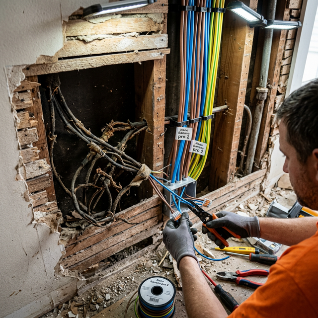

Замена проводки: когда это необходимо делать срочно?
Старый жилой фонд Кишинева (Хрущевки, Сталинки, Брежневки) часто таит в себе скрытую угрозу — алюминиевую электропроводку. Срок службы такого кабеля не превышает 20-30 лет.
5 признаков того, что проводку пора менять:
- Запах гари: Чувствуете запах паленого пластика возле розеток, особенно когда включаете мощные приборы? Это первый сигнал.
- Искрение: Розетки искрят при включении вилки, а изоляция вокруг них потемнела или обуглилась.
- Регулярно выбивает пробки: Если при включении чайника и стиральной машины одновременно старые автоматы не выдерживают — линия перегружена.
- Мерцание света: Лампочки часто перегорают или мерцают, хотя вы используете качественные LED-лампы.
- Не хватает розеток: Вся квартира опутана extension cords и тройниками. Это огромный риск пожара, так как старая алюминиевая жила не рассчитана на нагрузку от СВЧ-печей, бойлеров и кондиционеров.
Почему алюминий опасен?
Алюминий — текучий и хрупкий металл. Со временем контакты в розетках и распределительных коробках ослабевают. Увеличивается сопротивление, происходит нагрев, изоляция плавится — и случается короткое замыкание. Сегодня ГОСТ требует использовать только кабели с медными жилами (ВВГнг-LS).
Преимущества современной медной проводки:
Медь выдерживает в 1.5 раза большую нагрузку при том же сечении. Она гибкая, надежная и прослужит не менее 50 лет.
Заметили признаки старой проводки? Не ждите пожара!
Вызвать электрика на диагностику